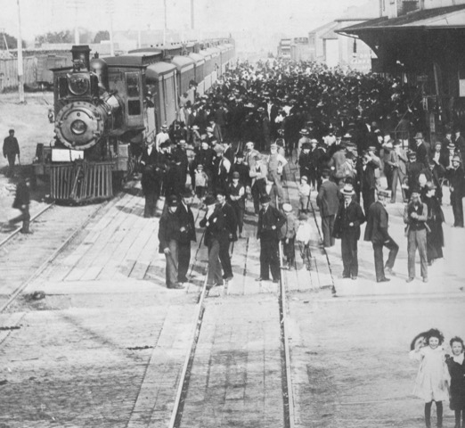

-1-MasterItem.svg)
Stories of Westminster United Church & its People / Page
54
The City of Winnipeg was gaining size every month, trains rolling in to
the CPR Station with hundreds of new citizens on a regular basis. The
City’s population had grown to 132,000. The area north of Notre Dame
Avenue continued to fill in ( the beginnings of our beloved NorhtEnd) and
the area west of Sherbrook Street, no longer bare prairie, was a builder’s
delight as houses ( some costing as much as $15,000 to $19,000 each)
were springing up on new streets connected, east-west, by Ida Avenue
(Wolseley) which was near the Assiniboine River and by Buell Avenue
(Westminster) further North.
In the new community there were major buildings in or nearly in place; for
example the
Sisters of The Misericordia’s new Winnipeg Maternity Hospital at Sherbrook and Ida had already
blossomed into a full sized hospital. Winnipeg’s newest school, Laura Secord on Ida and the
Anglicans’ St. Margaret’s Church on Buell would both be in operation by year 1912. In 1910
Westminster’s congregation selected their new building site at Maryland and Buell. In fact,
we selected two sites, both on Maryland, one for the church structure and the
other
at the corner of Purcell for the Manse.
Our new Glaswegian minister, David Christie, his wife Margaret, and their eight
children had arrived
in November ‘09 moving into a temporary manse at 49 Furby Street. By November ‘10 the basement
for the new building was dug, the foundation nearly completed and, winter
intervening, construction
up to the main floor was ready in April 1911 for the laying of the corner stone.
At this point I leave the congregation to its business and look to Scotland
and the background of our third minister, David Christie.
Table
of Contents
Rev. DAvid christie
